Plot = import("https://esm.sh/@observablehq/plot")
d3 = require("d3@7")
topojson = require("topojson")
MathJax = require("https://cdnjs.cloudflare.com/ajax/libs/mathjax/3.2.2/es5/tex-svg.min.js").catch(() => window.MathJax)
tf = require("https://cdn.jsdelivr.net/npm/@tensorflow/tfjs@latest/dist/tf.min.js").catch(() => window.tf)
THREE = {
const THREE = window.THREE = await require("three@0.130.0/build/three.min.js");
await require("three@0.130.0/examples/js/controls/OrbitControls.js").catch(() => {});
await require("three@0.130.0/examples/js/loaders/SVGLoader.js").catch(() => {});
return THREE;
}
function sample(f, start, end, nsamples=100) {
let arr = [...Array(nsamples).keys()]
let dist = end - start
function arrmap(ind) {
const x = (ind * dist) / nsamples + start;
return [x, f(x)];
}
return arr.map(arrmap)
}
function sigmoid(x){
return 1 / (1 + Math.exp(-x));
}
function sum(x) {
let s = 0;
for (let i = 0; i < x.length; i++ ) {
s += x[i];
}
return s;
}
function mean(x) {
let s = 0;
for (let i = 0; i < x.length; i++ ) {
s += x[i];
}
return s / x.length;
}
function cross_ent(x, y) {
return y ? -Math.log(sigmoid(x)) : -Math.log(sigmoid(-x));
}
function se(x, y) {
return (x - y) * (x - y);
}
function shuffle(array) {
let currentIndex = array.length, randomIndex;
// While there remain elements to shuffle.
while (currentIndex > 0) {
// Pick a remaining element.
randomIndex = Math.floor(Math.random() * currentIndex);
currentIndex--;
// And swap it with the current element.
[array[currentIndex], array[randomIndex]] = [
array[randomIndex], array[currentIndex]];
}
return array;
}
function acc(x, y) {
return Number(y == (x > 0));
}
function grid_func(f, width, height, x1, y1, x2, y2) {
let values = new Array(width * height);
const xstride = (x2 - x1) / width;
const ystride = (y2 - y1) / height;
let y = 0;
let x = 0;
let ind = 0;
for (let i = 0; i < height; i++ ) {
for (let j = 0; j < width; j++, ind++) {
x = x1 + j * xstride;
y = y1 + i * ystride;
values[ind] = f(x, y);
}
}
return {width: width, height: height, x1: x1, y1: y1, x2: x2, y2: y2, values: values};
}
function get_accessors(keys, byindex=false) {
let isString = value => typeof value === 'string';
let index = 0;
let indexmap = {};
let accessors = [];
for (let i = 0; i < keys.length; i++){
let k = keys[i];
if (Array.isArray(k)) {
let access = isString(k[0]) ? (x => x[k[0]]) : k[0];
if (byindex) {
if (isString(k[0]) && !(k[0] in indexmap)) {
indexmap[k[0]] = index;
index++;
}
let accessindex = indexmap[k[0]];
access = x => x[accessindex];
let process = k[1];
let final_access = x => process(access(x));
accessors.push(final_access);
}
else {
let process = k[1];
let final_access = x => process(access(x));
accessors.push(final_access);
}
}
else {
let access = isString(k) ? (x => x[k]) : k;
if (byindex) {
if (isString(k) && !(k in indexmap)) {
indexmap[k] = index;
index++;
}
let accessindex = indexmap[k];
access = x => x[accessindex];
}
accessors.push(access);
}
}
return accessors;
}
function predict(obs, weights, keys=["0", "1", "2", "3"], byindex=false) {
let isString = value => typeof value === 'string';
let accessors = get_accessors(keys, byindex);
let output = weights[0];
let wi = 1;
for (let i = 0; (i < keys.length) && (wi < weights.length); i++, wi++){
output += weights[wi] * accessors[i](obs);
}
return output;
}
function mean_loss(f, data, weights, keys, label, l2=0) {
let reg = 0;
if (l2 > 0){
for (let i = 1; i < weights.length; i++) {
reg += weights[i] * weights[i];
}
}
const isString = value => typeof value === 'string';
const get_label = isString(label) ? (x => x[label]) : label;
return mean(data.map(x => f(predict(x, weights, keys), get_label(x)))) + l2 * reg;
}
function get_domains(data, accessors, margin=0.1) {
let domains = [];
for (let i = 0; i < accessors.length; i++){
let xdomain = d3.extent(data, accessors[i]);
let xdsize = (xdomain[1] - xdomain[0]);
let xmin = xdomain[0] - xdsize * margin;
let xmax = xdomain[1] + xdsize * margin;
domains.push([xmin, xmax]);
}
return domains;
}
function logisticPlot2d(data, weights, keys, label, interval=0.05) {
const accuracy = mean_loss(acc, data, weights, keys, label);
let isString = value => typeof value === 'string';
let accessors = get_accessors(keys);
let index_accessors = get_accessors(keys, true);
let domains = get_domains(data, accessors);
const get_label = isString(label) ? (x => x[label]) : label;
return Plot.plot({
x: {tickSpacing: 80, label: "x"},
y: {tickSpacing: 80, label: "y"},
title: "Accuracy: " + accuracy.toFixed(3),
color: {type: "linear", legend: true, scheme: "BuRd", domain: [-0.5, 1.5]},
marks: [
Plot.contour({
fill: (x, y) => sigmoid(predict([x, y], weights, index_accessors)),
x1: domains[0][0], y1: domains[1][0], x2: domains[0][1], y2: domains[1][1], interval: interval,
}),
Plot.dot(data, {x: accessors[0], y: accessors[1], stroke: x=> (get_label(x) ? 1.35 : -0.35)})
]
});
}
function logisticLossPlot2d(data, weights, keys, label) {
const loss = mean_loss(cross_ent, data, weights, keys, label);
let isString = value => typeof value === 'string';
let accessors = get_accessors(keys);
let index_accessors = get_accessors(keys, true);
let domains = get_domains(data, accessors);
const get_label = isString(label) ? (x => x[label]) : label;
return Plot.plot({
x: {tickSpacing: 80, label: "x"},
y: {tickSpacing: 80, label: "y"},
title: "Loss: " + loss.toFixed(3),
color: {type: "linear", legend: true, scheme: "BuRd", domain: [0, 5]},
marks: [
Plot.contour({
value: (x, y) => predict([x, y], weights, index_accessors),
fillOpacity: 0.2,
stroke: "black", x1: domains[0][0], y1: domains[1][0], x2: domains[0][1], y2: domains[1][1],
thresholds: [-1e6, 0, 0.00001]
}),
Plot.dot(data, {x: accessors[0], y: accessors[1], stroke: x=> cross_ent(predict(x, weights, keys), get_label(x)),
strokeOpacity: 0.5 })
]
});
}
function lossPlot2d(f, data, keys, label, l2=0, res=100, x1=-40, y1=-0.015, x2=40, y2=0.015, vmax=50, nlines=25, ctype="sqrt", scale=(x => x)) {
let grid = 0;
function lossFunc(w, b) {
return scale(mean_loss(f, data, [w, b], keys, label, l2));
}
grid = grid_func(lossFunc,
res, res, x1, y1, x2, y2
);
function plot2d(weights) {
let w = weights;
if (!(Array.isArray(w[0]))){
w = [w];
}
var arrows = w.slice(0, w.length - 1).map(function(e, i) {
return e.concat(w[i+1]);
});
let interval= vmax / nlines;
let thresholds = [];
for (let i = 0; i < nlines; i++) {
thresholds.push(i * interval);
}
let loss = mean_loss(f, data, w[w.length - 1], keys, label, l2)
return Plot.plot({
title: "Loss: " + loss.toFixed(3),
color: {type: "linear", legend: true, label: "Loss", scheme: "BuRd", domain: [0, vmax], type: ctype},
marks: [
Plot.contour(grid.values, {width: grid.width, height: grid.height, x1: grid.x1, x2:grid.x2, y1: grid.y1, y2: grid.y2,
stroke: Plot.identity, thresholds: thresholds}),
Plot.dot(w),
Plot.arrow(arrows, {x1: "0", y1: "1", x2: "2", y2: "3", stroke: "black"})
]
})
}
return plot2d;
}
function regressionPlot(data, weights, keys, label, l2, f=se, stroke="") {
let loss = mean_loss(f, data, weights, keys, label, l2);
let isString = value => typeof value === 'string';
let accessors = get_accessors(keys);
let index_accessors = get_accessors(keys, true);
let domains = get_domains(data, get_accessors([label].concat(keys)));
const get_label = isString(label) ? (x => x[label]) : label;
let stroke_shade = stroke;
if (stroke == "") {
stroke_shade = (x => f(predict(x, weights, keys), get_label(x)))
}
return Plot.plot({
y: {domain: domains[0]},
title: "Loss: " + loss.toFixed(3),
color: {type: "linear", legend: true, label: "Loss", scheme: "BuRd", domain: [0, 100]},
marks: [
Plot.line(sample((x) => predict([x], weights, index_accessors), domains[1][0], domains[1][1]), {stroke: 'black'}),
Plot.dot(data, {x: accessors[0], y: get_label, stroke: stroke_shade })
]
})
}
function errorPlot(data, weights, keys, label, f, options={}) {
const isString = value => typeof value === 'string';
const get_label = isString(label) ? (x => x[label]) : label;
let errors = data.map(x => [predict(x, weights, keys) - get_label(x), f(predict(x, weights, keys), get_label(x))]);
let sigma = (options['sigma'] || 1);
let plots = [];
const xdomain = (options['xdomain'] || [-30, 30]);
const ydomain = (options['ydomain'] || [0, 0.1]);
if (options['plotnormal']){
let pdf = x => Math.exp(-0.5 * x * x / sigma) * ydomain[1];
let normal = Plot.line(sample(pdf, xdomain[0], xdomain[1]), {stroke: 'crimson'});
plots.push(normal);
}
if (options['plotlaplace']){
let pdf = x => Math.exp(-0.5 * Math.abs(x) / sigma) * ydomain[1];
let normal = Plot.line(sample(pdf, xdomain[0], xdomain[1]), {stroke: 'green'});
plots.push(normal);
}
return Plot.plot({
y: {grid: true, domain: ydomain},
x: {domain: xdomain},
color: {type: "linear", legend: true, label: "Loss", scheme: "BuRd", domain: [0, 100]},
marks: [
//Plot.rectY(errors, Plot.binX({y: "count", fill: x => mean(x.map(v => v[1]))}, {x: "0"})),
Plot.rectY(errors, Plot.binX({y: "proportion"}, {x: "0", fill: 'steelblue', interval: 1})),
Plot.ruleY([0])
].concat(plots)
})
}
function nnPlot(data, weights, keys, label, l2, f=se, stroke="", options=[]) {
let loss = mean_loss(f, data, weights, keys, label, l2);
let isString = value => typeof value === 'string';
let accessors = get_accessors(keys);
let index_accessors = get_accessors(keys, true);
let domains = get_domains(data, get_accessors([label].concat(keys)));
const get_label = isString(label) ? (x => x[label]) : label;
let stroke_shade = stroke;
if (stroke == "") {
stroke_shade = (x => f(predict(x, weights, keys), get_label(x)))
}
let a = []
if (options.indexOf("Show feature transforms") >= 0){
a = [Plot.line(sample((x) => keys[1][1](x), domains[1][0], domains[1][1]), {stroke: 'red'}),
Plot.line(sample((x) => keys[2][1](x), domains[1][0], domains[1][1]), {stroke: 'blue'})]
}
return Plot.plot({
y: {domain: domains[0]},
title: "Loss: " + loss.toFixed(3),
color: {type: "linear", legend: true, label: "Loss", scheme: "BuRd", domain: [0, 100]},
marks: [
Plot.line(sample((x) => predict([x], weights, index_accessors), domains[1][0], domains[1][1]), {stroke: 'black'}),
Plot.dot(data, {x: accessors[0], y: get_label, stroke: stroke_shade })
].concat(a)
})
}Lecture 6: Deep neural networks and backpropagation
Neural networks
Neural networks with matrices
Let’s return to our simple neural network example, where we have 2 inputs and 3 neurons (transforms): \[\mathbf{x} = \begin{bmatrix} x_1\\ x_2 \end{bmatrix}, \quad \mathbf{w}_0 = \begin{bmatrix} w_{01} \\ w_{02} \end{bmatrix}\] \[ f(\mathbf{x})=\phi(\mathbf{x})^T \mathbf{w}_0,\quad \phi(\mathbf{x}) = \begin{bmatrix} \sigma(\mathbf{x}^T \mathbf{w}_1) \\ \sigma(\mathbf{x}^T \mathbf{w}_2) \\ \sigma(\mathbf{x}^T \mathbf{w}_3) \end{bmatrix} = \begin{bmatrix} \sigma(x_1 w_{11} + x_2 w_{12}) \\ \sigma(x_1 w_{21} + x_2 w_{22}) \\ \sigma(x_1 w_{31} + x_2 w_{32}) \end{bmatrix} \]
Again, we can represent this pictorially again as a node-link diagram:
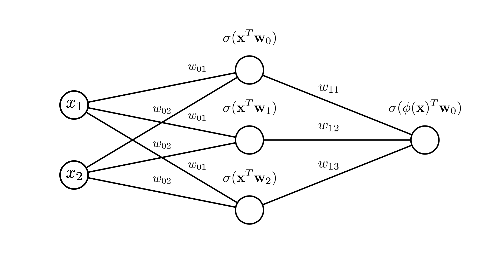
Let’s look at a more compact way to write this, using a weight matrix for the neural network layer. Let’s look at the transform before we apply the sigmoid function:
\[ \begin{bmatrix} \mathbf{x}^T \mathbf{w}_1 \\ \mathbf{x}^T \mathbf{w}_2 \\ \mathbf{x}^T \mathbf{w}_3 \end{bmatrix} = \begin{bmatrix} x_1 w_{11} + x_2 w_{12} \\ x_1 w_{21} + x_2 w_{22} \\ x_1 w_{31} + x_2 w_{32} \end{bmatrix} = \begin{bmatrix} w_{11} & w_{12} \\w_{21} & w_{22} \\ w_{31} & w_{32} \end{bmatrix} \begin{bmatrix} x_1 \\ x_2 \end{bmatrix} \]
If we define a matrix \(\mathbf{W}\) for all of the weights as:
\[ \mathbf{W} = \begin{bmatrix} w_{11} & w_{12} \\w_{21} & w_{22} \\ w_{31} & w_{32} \end{bmatrix} \]
we get:
\[
\begin{bmatrix} \mathbf{x}^T \mathbf{w}_1 \\ \mathbf{x}^T \mathbf{w}_2 \\ \mathbf{x}^T \mathbf{w}_3 \end{bmatrix} = \mathbf{W}\mathbf{x} = (\mathbf{x}^T\mathbf{W}^T)^T
\]
If we let \(h\) be the number of neuron (or hidden layer units) then this is a \(h \times d\) matrix. Therefore, we can write our transform as:
\[ \phi(\mathbf{x}) = \sigma(\mathbf{x}^T\mathbf{W}^T)^T, \quad f(\mathbf{x}) = \sigma(\mathbf{x}^T\mathbf{W}^T) \mathbf{w}_0 \]
Recall that if we have multiple observations, as in a dataset, we define them together as an \(N \times d\) matrix \(\mathbf{X}\) such that each row is an observation:
\[ \mathbf{X} = \begin{bmatrix} \mathbf{x}_1^T \\ \mathbf{x}_2^T \\ \mathbf{x}_3^T \\ \vdots \end{bmatrix} \]
Therefore, we can transform all of these observations at once by multiplying this matrix by \(\mathbf{W}^T\).
\[ \phi(\mathbf{X}) = \sigma(\mathbf{X}\mathbf{W}^T)^T = \begin{bmatrix} \sigma(\mathbf{x}_1^T\mathbf{w}_1) & \sigma(\mathbf{x}_1^T\mathbf{w}_2) & \dots & \sigma(\mathbf{x}_1^T\mathbf{w}_h \\ \sigma(\mathbf{x}_2^T\mathbf{w}_1) & \sigma(\mathbf{x}_2^T\mathbf{w}_2) & \dots & \sigma(\mathbf{x}_2^T\mathbf{w}_h) \\ \vdots & \vdots & \ddots & \vdots \\ \sigma(\mathbf{x}_N^T\mathbf{w}_1) & \sigma(\mathbf{x}_N^T\mathbf{w}_2) & \dots & \sigma(\mathbf{x}_N^T\mathbf{w}_h) \end{bmatrix} \]
We see that this is an \(N \times h\) matrix where each row is a transformed observation! We can then write our full prediction function as
\[ \quad f(\mathbf{x}) = \sigma(\mathbf{X}\mathbf{W}^T) \mathbf{w}_0 \]
To summarize:
\(\mathbf{X}: \quad N \times d\) matrix of observations
\(\mathbf{W}: \quad h \times d\) matrix of network weights
\(\mathbf{w}_0: \quad h\ (\times 1)\) vector of linear regression weights
If we check that our dimensions work for matrix multiplication we see that we get the \(N\times 1\) vector of predictions we are looking for!
\[ (N \times d) (h \times d)^T (h \times 1) \rightarrow (N \times d) (d \times h) (h \times 1) \rightarrow (N \times h) (h \times 1) \]
\[ \longrightarrow (N \times1) \]
Benefits of neural networks
We’ve seen that the neural network transform is still fairly restrictive, with a limited number of neurons we can’t fit any arbitrary function. In fact, if we choose our feature transforms wisely we can do better than than a neural network.
For example, consider the simple 3-neuron network above. We can see that if we try to fit a circular dataset with it, it performs worse than an explicit transform with \(x_1^2\) and \(x_2^2\).
Circle dataset with \(x_1^2\) and \(x_2^2\):
Similarly, for a cross dataset, we can do better with the feature transform that includes \(x_1x_2\) as a feature:
However, if we choose the wrong feature transform for a given dataset, we do far worse.
Circle dataset with \(x_1 x_2\)
Cross dataset with \(x_1^2\) and \(x_2^2\)
We see that the real power of the neural network here is the ability to adapt the transform to the given dataset, without needing to carefully choose the correct transform!
Deep Neural Networks
What we’ve seen so far is a neural network with a single hidden layer, meaning that we create a feature transform for our data and then simply use that to make our prediction. We see that each individual feature transform is a bit limited, being just a logistic regression function.
\[\phi(\mathbf{x})_i = \sigma(\mathbf{x}^T \mathbf{w}_i)\]
No matter what we set \(\mathbf{w}_i\) this transform would not be able to replicate a transform like \(\phi(\mathbf{x})_i = x_i^2\). However, we’ve already seen a way to make logistic regression more expressive: neural networks!
The idea behind a deep or multi-layer neural network is that we can apply this idea of neural network feature transforms recursively:
\[\phi(\mathbf{x})_i = \sigma(\sigma(\mathbf{x}^T\mathbf{W}^T) \mathbf{w}_i)\]
Here we’ve transformed our input before computing our feature transform. In terms of a dataset we can write the full prediction function for this 2-layer network as:
\[ f(\mathbf{X}) = \sigma(\sigma(\mathbf{X}\mathbf{W}_1^T)\mathbf{W}_2^T)\mathbf{w}_0 \]
We’ve now defined a set of weight parameters for each of our 2 hidden layers \(\mathbf{W}_1\) and \(\mathbf{W}_2\). It’s a little easier to see what’s happening here if we look a our diagram for this case:
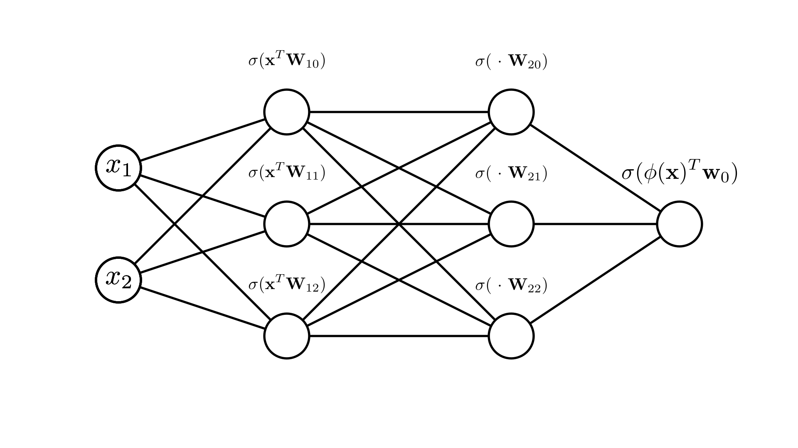
We can see that stacking these transforms allows us to fit even more complicated functions here. Note that we are still not limited to doing this twice! We can fit many layers of transforms:
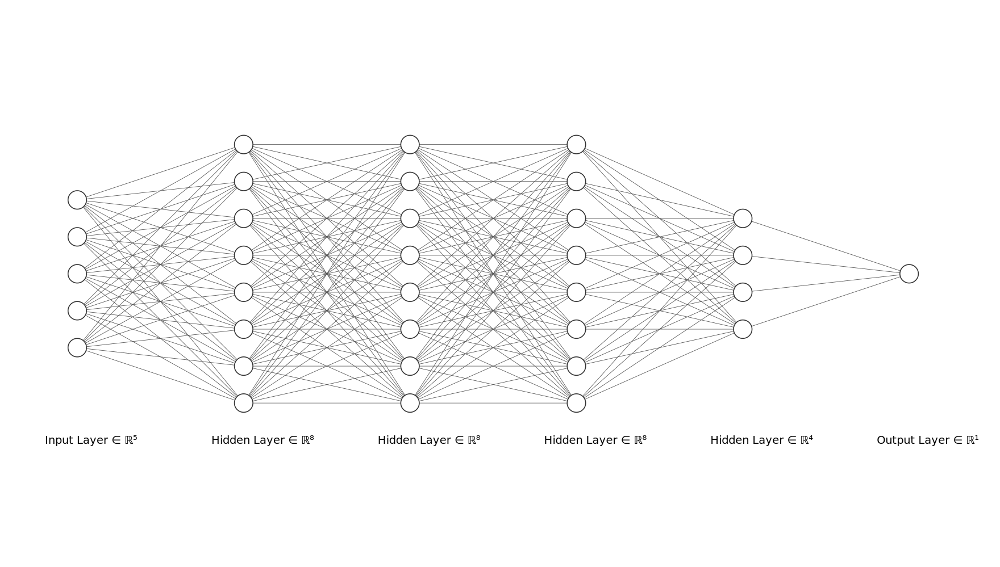
Later on in the semester we’ll talk in more depth about the effect of the number of layers and the number of neurons per layer!
Optimizing neural networks
We can still define a loss function for a neural network in the same way we did with our simpler linear models. The only difference is that now we have more parameters to choose:
\[ \mathbf{Loss}(\mathbf{w}_0,\mathbf{W}_1,...) \]
Let’s look at the logistic regression negative log-likelihood loss for the simple neural network we saw above (for simplicity we’ll just call the network weights \(\mathbf{W}\)). The probability of class 1 is estimated as:
\[ p(y=1\mid \mathbf{x}, \mathbf{w}_0,\mathbf{W})=\sigma(\phi(\mathbf{x})^T \mathbf{w}_0) = \sigma(\sigma(\mathbf{x}^T \mathbf{W}^T) \mathbf{w}_0),\quad \phi(\mathbf{x}) = \begin{bmatrix} \sigma(\mathbf{x}^T \mathbf{W}_{1}) \\ \sigma(\mathbf{x}^T \mathbf{W}_{2}) \\ \sigma(\mathbf{x}^T \mathbf{W}_{3}) \end{bmatrix} \] \[ = \sigma\big(w_{01} \cdot\sigma(x_1 W_{11} + x_2 W_{12}) + w_{02} \cdot\sigma(x_1 W_{21} + x_2 W_{22})+ w_{03} \cdot\sigma(x_1 W_{31} + x_2 W_{32}) \big)\]
Therefore the negative log-likelihood is:
\[ \mathbf{NLL}(\mathbf{w}_0,\mathbf{W}, \mathbf{X}, \mathbf{y}) = -\sum_{i=1}^N \bigg[ y_i\log p(y=1\mid \mathbf{x}, \mathbf{w}_0,\mathbf{W}) + (1-y_i)\log p(y=0\mid \mathbf{x}, \mathbf{w}_0,\mathbf{W}) \bigg] \]
\[ = -\sum_{i=1}^N \log \sigma\big((2y_i-1) \phi(\mathbf{x}_i)^T \mathbf{w}\big) \]
We see that we can write out a full expression for this loss in term of all the inputs and weights. We can even define the gradient of this loss with respect to all the weights:
\[ \nabla_{\mathbf{w}_0} \mathbf{NLL}(\mathbf{w}_0,\mathbf{W}, \mathbf{X}, \mathbf{y}) = \begin{bmatrix} \frac{\partial \mathbf{NLL}}{\partial w_{01}} \\ \frac{\partial \mathbf{NLL}}{\partial w_{02}} \\ \frac{\partial \mathbf{NLL}}{\partial w_{03}} \\ \vdots\end{bmatrix}, \quad \nabla_{\mathbf{W}}\mathbf{NLL}(\mathbf{w}_0,\mathbf{W}, \mathbf{X}, \mathbf{y}) = \begin{bmatrix} \frac{\partial \mathbf{NLL}}{\partial W_{11}} & \frac{\partial \mathbf{NLL}}{\partial W_{12}} & \dots & \frac{\partial \mathbf{NLL}}{\partial W_{1d}} \\ \frac{\partial \mathbf{NLL}}{\partial W_{21}} & \frac{\partial \mathbf{NLL}}{\partial W_{22}} & \dots & \frac{\partial \mathbf{NLL}}{\partial W_{2d}} \\ \vdots & \vdots & \ddots & \vdots \\ \frac{\partial \mathbf{NLL}}{\partial W_{h1}} & \frac{\partial \mathbf{NLL}}{\partial W_{h2}} & \dots & \frac{\partial \mathbf{NLL}}{\partial W_{hd}} \end{bmatrix} \]
Note that as \(\mathbf{W}\) is a matrix, the gradient with respect to \(\mathbf{W}\) is also a matrix! Our gradient descent algorithm can proceed in the same way it did for our linear models, but here we now need to update both sets of parameters:
\[ \mathbf{w}_0^{(k+1)} \longleftarrow \mathbf{w}_0^{(k)} -\alpha \nabla_{\mathbf{w}_0} \mathbf{NLL}(\mathbf{w}_0,\mathbf{W}, \mathbf{X}, \mathbf{y}), \quad \mathbf{W}^{(k+1)} \longleftarrow \mathbf{W}^{(k)} -\alpha \nabla_{\mathbf{W}} \mathbf{NLL}(\mathbf{w}_0,\mathbf{W}, \mathbf{X}, \mathbf{y}) \]
The important question now becomes: how do we compute these gradients?
Automatic Differentiation
In this section we’ll derive algorithms for computing the derivative of any function.
Motivation
We saw above that the NLL for logistic regression with a neural network is:
\[ \mathbf{NLL}(\mathbf{w}_0,\mathbf{W}, \mathbf{X}, \mathbf{y}) = -\sum_{i=1}^N \log \sigma\big((2y_i-1) \phi(\mathbf{x}_i)^T \mathbf{w}\big) \]
If we write this out in terms of the individual values we get:
\[ = -\sum_{i=1}^N \log \sigma\big((2y_i-1)\sigma\big(w_{01} \cdot\sigma(x_1 W_{11} + x_2 W_{12}) + w_{02} \cdot\sigma(x_1 W_{21} + x_2 W_{22})+ w_{03} \cdot\sigma(x_1 W_{31} + x_2 W_{32}) \big)\big) \]
We could use the same approach as usual to find the derivative of this loss with respect to each individual weight parameter, but it would be very tedious and this is only a single-layer network! Things would only get more complicated with more layers. Furthermore if we changed some aspect of the network, like the activation function, we’d have to do it all over again.
Ideally we’d like a programmatic way to compute derivatives. Knowing that we compute derivatives using a fixed set of known rules, this should be possible!
The chain rule revisited
While we often think about the chain rule in terms of functions:
\[ \frac{d}{dx}f(g(x)) = f'(g(x))g'(x) \]
It’s often easier to view it imperatively, in terms of individual values. For example we might say:
\[ b = g(x) \]
\[ a = f(b) \]
In this case we can write the chain rule as:
\[ \frac{da}{dx} = \frac{da}{db}\frac{db}{dx} \]
This corresponds with how we might think about this in code. For example we might have the code:
b = x ** 2
a = log(b)In this case we have:
\[ a = \log(b), \quad b = x^2 \]
We can compute the derivative of \(a\) with respect to \(x\) using the chain rule as:
\[ \frac{da}{db} = \frac{1}{b}, \quad \frac{db}{dx} = 2x \]
\[ \frac{da}{dx} = \bigg(\frac{1}{b}\bigg)(2x) = \frac{2x}{x^2} = \frac{2}{x} \]
Composing many operations
For more complex functions, we might be composing many more operations, but we can break down derivative computations in the same way. For example, if we want the derivative with respect to \(x\) of some simple loss:
\[ L=-\log \sigma\big(w x^2\big) \]
We can break this down into each individual operation that we apply:
\[ a = x^2 \]
\[ b=wa \]
\[ c=\sigma(b) \]
\[ g= \log c \]
\[
L=-g
\]
The chain rule tells us that:
\[
\frac{dL}{dx} = \frac{dL}{dg}\frac{dg}{dc}\frac{dc}{db}\frac{db}{da}\frac{da}{dx}
\]
Since each step is a single operation with a known derivative, we can easily compute every term above! Thus, we begin to see a recipe for computing derivatives programatically. Every time we perform some operation, we will also compute the derivative with respect to the input (we can’t just compute the derivatives because each derivative needs the preceding value, e.g. \(\frac{dg}{dc}=\frac{1}{c}\), so we need to first compute \(c\)).
We can visually look at the chain of computation that we’re performing as a diagram that shows each step and the result.
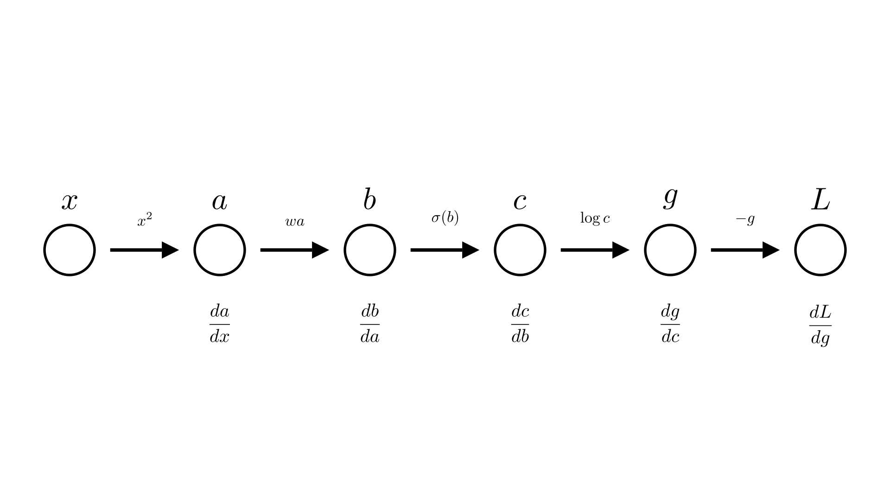
We call this structure the computational graph.
Forward and reverse mode automatic differentiation
We are not actually interested in all of the intermediate derivatives ( \(\frac{db}{da}, \frac{dc}{db}\) etc.), so it doesn’t make much sense to compute all of them and then multiply them together. Instead, we’d rather just incrementally compute the value we’re interested in \(\frac{dL}{dx}\), as we go.
There are 2 ways we could consider doing this. One way is to always keep track of the derivative of the current value with respect to \(x\). So in the diagram above, each time we perform a new operation we will also compute the derivative of the operation and then update our knowledge of the derivative with respect to \(x\). For example for the operation going from \(b\) to \(c\):
\[ c \leftarrow \sigma(b), \quad \frac{dc}{dx} \leftarrow \frac{dc}{db}\cdot\frac{db}{dx} \]
We call this approach forward-mode automatic differentiation.
The alternative approach is to work backwards, first compute \(L\) and \(\frac{dL}{dg}\) and then go backwards through the chain updating the derivative of the final output with respect to each input for the \(b\) to \(c\) operation this looks like:
\[ c \leftarrow \sigma(b), \quad \frac{dL}{db} \leftarrow \frac{dc}{db}\cdot\frac{dL}{dc} \]
This means we need to do our computation in 2 passes. First we need to go through the chain of operations to compute \(L\), then we need to go backwards through the chain to compute \(\frac{dL}{dx}\). Note that computing each intermediate derivative requires the a corresponding intermediate value (e.g. \(\frac{dc}{db}\) requires \(b\) to compute). So we need to store all the intermediate values as we go. The approach is called reverse-mode automatic differentiation or more commonly: backpropagation. We can summarize both approaches below:
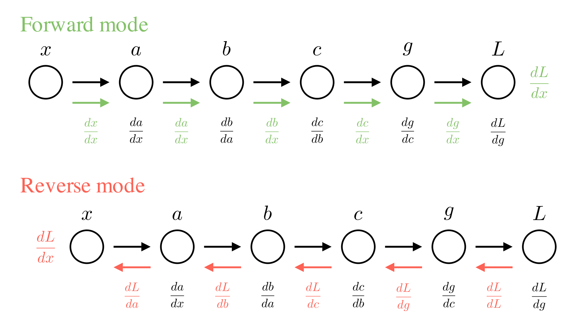
Automatic differentiation with multiple inputs
You might wonder why we’d ever use reverse-mode when it seems to require much more complication in keeping track of all the intermediate values. To see why it is useful, lets’s consider the common case where we would like to take derivatives with respect to multiple inputs at the same time. For example we might have an expression like:
\[ -\log \sigma (w_1 x_1+w_2x_2 +w_3x_3) \]
In this case we want to find the gradient:
\[ \frac{dL}{d\mathbf{x}} = \begin{bmatrix}\frac{dL}{dx_1} \\ \frac{dL}{dx_2} \\ \frac{dL}{dx_3} \end{bmatrix} \]
We see that in forward mode, we now need to keep a vector of gradients at many steps if we want to compute the derivative with respect to every input!
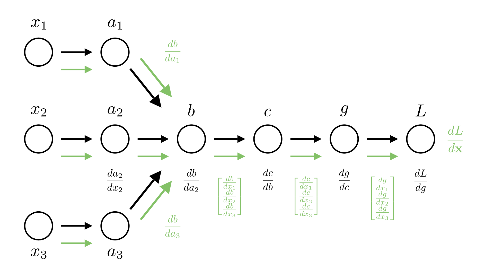
In reverse mode, however we only ever need to keep the derivative of the loss with respect to the current value. If we assume that the loss is always a single value, this is much more efficient!
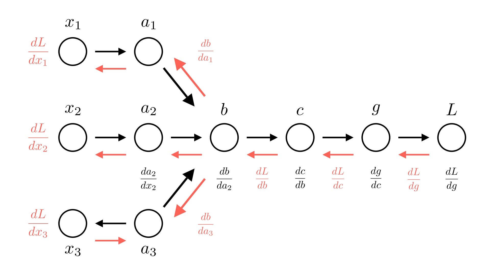
Reusing values
One thing we need to consider is the fact that values can be used in multiple different operations. For example, consider the code below.
def loss(x):
a = x ** 2
b = 5 * a
c = log(a)
g = b * c
L = -g
return LThis corresponds to the following sequence of operations:
\[ a = x^2 \]
\[ b=5a \]
\[ c=\log a \]
\[ g = bc \]
\[ L=-b \]
We see that both \(b\) and \(c\) depend on \(a\). Leading to the following computational graph:
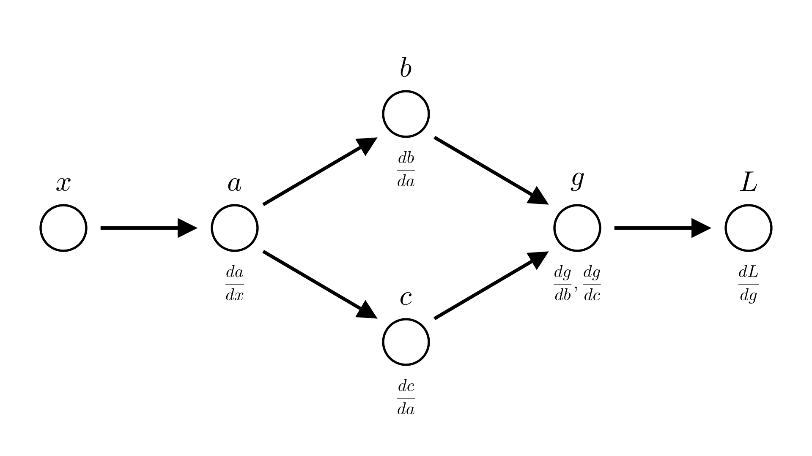
In forward mode this means that we compute 2 different values for \(\frac{dg}{dx}\), one from \(b\) \((\frac{dg}{db}\cdot\frac{db}{dx})\) and one from \(c\) \((\frac{dg}{dc}\cdot\frac{dc}{dx})\).
In reverse mode this means that we compute 2 different values for \(\frac{dL}{da}\), one from \(b\) \((\frac{dL}{db}\cdot\frac{db}{da})\) and one from \(c\) \((\frac{dL}{dc}\cdot\frac{dc}{da})\).
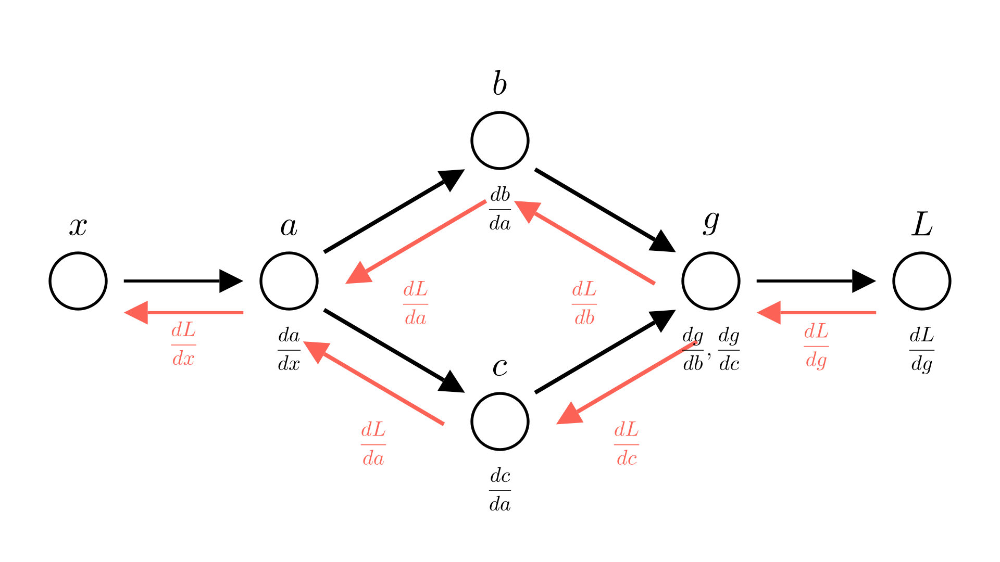
The resolution in both cases is simple! Just add the two terms. So in forward mode:
\[\frac{dg}{dx} = \frac{dg}{db}\cdot \frac{db}{dx} +\frac{dg}{dc}\cdot \frac{dc}{dx}\]
In reverse mode:
\[\frac{dL}{da} = \frac{dL}{db}\cdot \frac{db}{da} + \frac{dL}{dc}\cdot \frac{dc}{da} \]
The forward case for this example is just an application of the product rule:
\[ g =bc \]
\[ \frac{dg}{dx} =\frac{dg}{db}\cdot \frac{db}{dx} +\frac{dg}{dc}\cdot \frac{dc}{dx} = c\cdot \frac{db}{dx} +b \cdot \frac{dc}{dx} \]
For reverse mode we need to expand an rearrange a bit:
\[ \frac{dL}{da} =\frac{dL}{dg}\cdot \frac{dg}{da} \]
\[ \frac{dg}{da} =\frac{dg}{db}\cdot \frac{db}{da} +\frac{dg}{dc}\cdot \frac{dc}{da} \]
\[ \frac{dL}{da} =\frac{dL}{dg}\bigg( \frac{dg}{db}\cdot \frac{db}{da} +\frac{dg}{dc}\cdot \frac{dc}{da} \bigg) \]
\[ =\frac{dL}{dg} \frac{dg}{db} \frac{db}{da} + \frac{dL}{dg}\frac{dg}{dc} \frac{dc}{da} \]
\[ =\frac{dL}{db}\cdot \frac{db}{da} + \frac{dL}{dc}\cdot \frac{dc}{da} \]
This also works for addition:
\[ g =b + c \]
\[ \frac{dg}{dx} =\frac{dg}{db}\cdot \frac{db}{dx} +\frac{dg}{dc}\cdot \frac{dc}{dx} \]
\[ \frac{dg}{db}=1,\ \frac{dg}{dc}=1 \]
\[ \frac{dg}{dx} =\frac{db}{dx} + \frac{dc}{dx} \]
And in general any binary operation! (Division, powers etc.).
Partial and total derivatives
So far we’ve been a bit sloppy in our discussion of derivatives. To see why, let’s consider one more case:
\[ a = x^2 \]
\[ b=5a \]
\[ c = a b \]
\[ L=-c \]
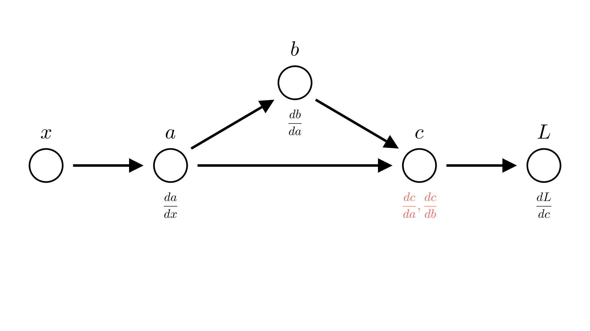
Saying that \(\frac{dc}{da}=b\) isn’t quite correct, because \(b\) also depends on \(a\), really \(\frac{dc}{da} =\frac{dc}{da}+\frac{dc}{db}\frac{db}{da}\). We already account for this in our automatic differentiation though, so we want a way to talk about the derivative of an operation with respect to it’s inputs ignoring how the inputs may depend on each other.
This is where the notion of a partial derivative comes in, the partial derivative of function with respect to an input is the derivative ignoring any dependencies between inputs. We’ve already seen how we denote this:
\[ \frac{\partial c}{\partial a} = b =5a \]
The total derivative is the derivative where we do account for this. In our example:
\[
\frac{dc}{da} =\frac{\partial c}{\partial a}+\frac{\partial c}{\partial b}\frac{\partial b}{\partial a} = 5a + 5a = 10a
\]
In our earlier examples, we typically had partial derivatives equal to total derivatives, so the distinction wasn’t really important. This example shows why it is.
Let’s see our earlier example, but this time we’ll make the distinction between partial and total derivatives explicit
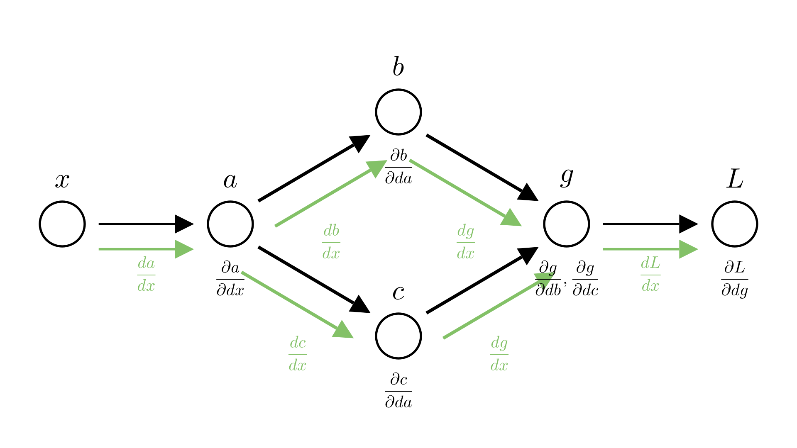
This is also why we specify gradients in terms of partial derivatives! If we’re taking the gradient of a function with respect to multiple inputs, we don’t know where these inputs come from. They might depend on each other! By specifying gradients at partial derivatives, we make it clear that we’re not accounting for that.
Implementing automatic differentiation
We see that our computational graph is essentially a tree-like data-structure call a directed acyclic graph, essentially a tree where each node can have more than one parent. Therefore we can implement it much like a tree!
In particular we can create a class that represents a node in our computational graph (corresponding to the result of some operation). This class will store the value of that operation as well as it’s parents in the computational graph.